Everything is a Node.
EiN is a system you host yourself, built on one idea: files, accounts, logs, queues and even its own commands are nodes in one tree, each with an owner and permissions. You work on the tree from a web interface or a real bash shell, pipelines act on every change, and modules decide what it is for.
Getting started
EiN Core
The bare bones EiN installation: add to it when you want.
$ curl -fsSL https://einhq.eu/install.sh | bashEiN Archive
The full Archive installation, with the media service and the chat.
$ curl -fsSL https://einhq.eu/install.sh | bash -s -- --ems --llm --module archive --module assistant
The installation checks system requirements. Then it fetches deploy into ~/ein, builds and starts,
and prints the admin password to sign in with. It needs no root. Read it first.
What it needs
- Linux on x86-64
- podman, rootless, or Docker, with compose
- git, curl and openssl
- 10 GB free disk, 100 GB with the media service, plus your files
- 4 GB memory, 16 GB with the media service
- An NVIDIA card is optional
The system requirements below have the details.
Options
The installer passes its options to ~/ein/setup.sh, which is EiN's own setup once it is installed. An option chosen once is kept, so it is given only
when adding something.
Update
Fetches the newest EiN and its services, rebuilds and restarts, keeping the options and modules chosen before.
$ ~/ein/setup.shAdd later
An option or a module on an EiN already installed, here the media service.
$ ~/ein/setup.sh --emsCore
How the core is put together
The core is one program, in TypeScript on Deno, with PostgreSQL beside it. People come in through a few doors, and what they do becomes shell commands. Every command works on one tree of nodes, and stores underneath keep its parts: most of it in the database, some in memory, in a folder on the server or on another machine.
In the background
People
/tmp, gone at a restart/usr/bin, every command as a nodeStores, each mounted where its part of the tree belongs
A change sets work going
- A command writesA person's, a service's or a pipeline step's
- The tree commits itWith who made the change, in the audit trail
- An event goes outOr a module announces a fact about the node
- A queue keeps itIn the database, so a restart loses nothing
- A pipeline startsAnd runs its steps, which are commands
What the steps write is a change too
Even the doors are services
At boot, scripts in /etc/init mount the stores, set up the accounts and install the modules. Then every service in /etc/services starts:
the web server, the SSH server, the pipeline engine and what the modules add. A service is a folder with a start script, run in the same shell as everything
else, restarted by its own policy, with its output in a log node.
$ ls /etc/services
http-server pipeline-engine relations-guard ssh-server trash-purger
metrics-sampler pipeline-pruner session-reaper tmp-sweeper
$ cat /etc/services/http-server/start.sh
www active || www reset
http-server "$WWW_PATH" --port "${CFG_HTTP_PORT:-8080}"
$ tail -f /var/logs/services/http-server/stdout.logOne tree of nodes
A node has a type, the attributes that type needs, an owner, a group and permission bits, and a name in a folder. It can have names in several folders at once, as a hard link does, so one thing is never copied to be in two places. Each part of the tree is kept by a store, and a node looks the same whichever store holds it.
- id
01JZ8Q4T2MXK6V3B9C7D5E1F0G, a ULID that never changes, whatever the node is renamed or moved to- type
file,user,queue, or a type a module adds- props
- Owner, group and mode, with an optional access list; who created it, last changed it and last wrote it, and when; how many folders hold it
- attrs
- JSON shaped by the type: a file's mimetype, size and SHA-256, a log's retention, a position's shape on the map
The core's 17 node types
Content
directory file softlink
Space and similarity
position track embedding
People and access
user group session tty share-link
The machinery
command log queue pool router null
A track is a timed GPS route, an embedding a vector for searching by likeness. A pool holds background jobs that workers claim, a router broadcasts live events. Modules add types of their own, and the documentation lists every type with the module that adds it.
A file system for everything
The nodes form one virtual file system with a familiar layout. The commands are nodes under /usr/bin, every account is a node under
/etc/users, and a service is a folder with a start script. Parts of the tree can be mounted from elsewhere: memory for /tmp, a folder on the
host, or another machine over SFTP.
- Permissions work as in Unix, with owner, group and other bits, plus access lists that only grant. One check applies in the browser, the shell, SSH and SFTP.
- Every change is written to an audit trail in the same transaction: who, from which session or pipeline, and the values before and after.
- A deleted node waits 30 days in its owner's trash, and restoring it puts back the same nodes, links and all.
- Every change is an event that pipelines and commands can wait for:
tail -ffollows a log as it is written, andcaton a router node prints events as they arrive.
/
├── archive what the modules keep
├── home/helen an account's own files and trash
├── etc users, groups, services, settings
├── var logs, sessions, queues, pools,
│ pipeline runs
├── usr
│ ├── bin every command, as a node
│ ├── modules the installed modules
│ └── docs the documentation
├── dev null, and the live events
└── tmp in memory, swept after a dayA real shell on the tree
EiN comes with a bash-compatible shell and more than 200 commands of its own, from ls, find and awk to managing users,
services and pipelines. Modules add theirs beside them. The shell runs inside EiN, so a command works on nodes, as the person who runs it, with that person's
permissions.
Through every door
Press Alt+T on any page for a terminal, or log in with SSH. The same server speaks SFTP, so the tree mounts as a folder.
$ ssh -p 2222 helen@ein.example
helen@:~$ ls /etc/services
helen@:~$ tail -f /var/logs/system
helen@:~$ JSON_OUTPUT=1 ls ~
helen@:~$ nohup ./reindex.sh &
$ sshfs -p 2222 helen@ein.example:/ ~/ein -o transform_symlinks-
The parser and the executor are libraries of their own,
@ein/bash-parserand@ein/bash-executor, and their bash compatibility is measured with GNU bash's own test suite. - With
JSON_OUTPUT=1, commands answer in JSON; text tools such asgrepstay text. - A bash script that declares its arguments becomes a command, with
--helpand Tab completion. - Jobs, pipes and signals work as in bash. A job started with
nohupkeeps running after the tab or the SSH session closes. - Every command declares whether it reads or writes, and some are for administrators only, so a whole command line can be judged before it runs.
A web interface that runs the same commands
The browser keeps one connection open to the server and gets each page's data by running shell commands as you, reading their answers in JSON. Anything you can click you can script, and what you may not see in the shell you cannot see in the browser either.
The core brings the frame and the pages every installation needs: a home page, search, a finder on Ctrl+K that also runs commands, the terminal, a node explorer, the system dashboard, accounts, groups and permissions, a trash, and documentation for every command, setting and node type. A module adds entries to the sidebar and the top bar and the pages they open, as a page, a dialog, a drawer or full screen.
- The doors The web interface, its terminal, SSH and SFTP
- The shell A command line, run as the person who sent it
- One permission check The same for every door, down to each node and its folders
- The tree Nodes, links and events, in whichever store holds them
Pipelines act on every change
A pipeline is a short YAML file: what starts it, a change to the tree or a fact a module announces, and the commands to run, as steps that may depend on each other. Work waits in durable queues, so nothing is lost when the server restarts, and a node waits once for a pipeline however many times it changes.
name: inbox-unzip
description: Unpack a zip dropped in an inbox, then remove it
trigger:
event: updated
nodeType: file
match:
nodePath: '/home/*/inbox/**'
mimetype: application/zip
# once the upload has ended: its checksum is written last
filter: JSON_OUTPUT=1 attrs "$NODE_PATH" | jq -e .sha256 > /dev/null
steps:
expand:
command: unzip -n -d "$(dirname $NODE_PATH)" $NODE_PATH
remove:
command: rm $NODE_PATH
dependsOn: [expand]
options:
maxAttempts: 2
A whole pipeline: when a zip has finished arriving in someone's inbox folder, unpack it beside itself and remove it. pipeline define registers it.
- A step can ask for a pool of workers and the resources it needs, such as room on the graphics card, and runs when they are free.
- A step that meets a busy service hands its job back and waits, without counting it as a failure. Bad input fails at once and is not retried.
- A failed run is tried again after an hour, six hours and a day, then marked as needing a person.
- Bulk work, such as reprocessing everything a module keeps, gives way to what was just added.
- Services, from the web server to the pipeline engine, are supervised and restarted by their own policy, each with its own log.
It tells you whether it is keeping up
The system dashboard opens on one word, Healthy, Catching up, Stuck or Needs a person, with the reasons for it. Its tabs show the machine's load, how long the disks will last, every pipeline with its backlog and when it will be done, the services and a live log.
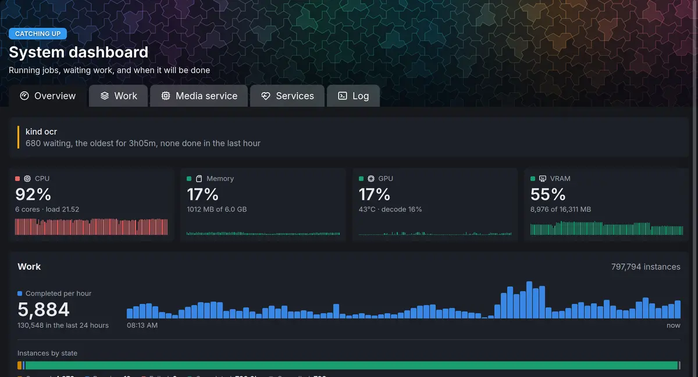
Everything else is a module
The core is the tree, the shell, the pipelines, accounts and sharing, and the web interface's frame. What EiN is for comes from modules. A module is a folder with a manifest, and what it adds is what its folders hold.
my-module/
├── mod.json name, version, the core API it needs,
│ other modules, settings, node types
├── bin/ its commands
├── pipelines/ its pipelines
├── services/ what runs in the background
├── types/ the attributes of its node types
├── ui/ its menu entries and pages
├── docs/ its pages in the documentation
└── etc/ its own settings, and what it
gives other modules- A module declares the version of the core's API it is written for, and the modules it builds on.
- Its settings and node types appear in the documentation from the manifest alone.
-
Names join a module to the core's pages: a command called
search-…adds results to search, and one callednews-…adds a section to the home page. -
Modules meet without naming each other: what one keeps in its
etc/<name>.d/is linked into/etc/<name>.d/, for whichever module reads that folder.
Modules are installed from their repositories, the einhq organisation's module-* ones, with the modules they need: from Settings → Modules,
or with mod install in the shell. They are kept in a folder of their own beside EiN, so an update keeps them.
Assistant
Ask EiN in your own words
The Assistant is a module that adds a chat beside every page, and a page of earlier conversations. It answers by running EiN's own commands, as you, with your permissions, and shows each command it ran.
It is one more door onto the same layers as the browser and the shell, so what you may not see there it cannot see either. On its own it knows the system; each module installed beside it teaches it that module's part.
The commands are its tools
A small language model cannot keep hundreds of commands in mind, so the assistant offers it the few used most and a way to find the rest. It searches every
command on your path by what it does, by meaning and by words, reads that command's own --help, and runs a line of bash in EiN's shell. A new command
is offered the moment it describes itself.
- A line that only reads runs at once. A line that changes anything is shown to you to run or decline, and the assistant goes on from how it went.
- It knows the page you have open: its title, what it shows and the node it is about.
- Each line gets a minute. When lines run too long, it answers from what it has and says what was slow.
- Your question "Is a pipeline stuck?", and the page you are on
-
find_commandsEvery command, searched by what it does -
command_helpThe command's arguments and flags, and an example -
run_commandpipeline-overview, run in the shell as you - The answer Text with links, and a table, a chart or a card when it helps
It knows the system, and shows its work
Without any other module, the assistant knows what the core keeps: files and folders, logs, services, pipelines, accounts and storage. Ask it as you would ask whoever runs the machine.
What is in my home folder?
ls -l ~Which services are running?
service-list --detailHow much disk is left?
dfWhich users are there?
user-listPut "Hello" in a file called hello.txt
echo "Hello" > ~/hello.txtRun
- Unfold "Ran 2 commands" under an answer to see each command line and what it printed.
- A link in an answer is kept only when the node exists and you may see it; a path the model made up becomes plain words.
- A table or a chart of a log is read from the command's output, not copied out by the model, so no value moves to the wrong row.
- It replies in the language you asked in.
- Every conversation is a log in your own home, private to you.
Modules teach it their part
The assistant names no module. A module that has something for it keeps a folder for it, which EiN links into /etc/assistant.d/: the commands it
offers as tools, a page on what it keeps and where, and the cards it can draw under an answer. The assistant brings its own: ls,
stat, find and cat for the tree, and a chart.
/etc/assistant.d/
└── <module>/
├── tools the commands it offers, one a line
├── prompt.md what it keeps, and where
└── cards.json what it can draw under an answerYour model, on your machine
By default the model is Qwen3.5-4B in llama.cpp, on your own graphics card or processor. Any server that speaks OpenAI's chat API can take its place: vLLM, Ollama, LM Studio, or a hosted provider such as OpenAI, OpenRouter, Mistral or Groq. With a hosted provider named, the chat tells everyone that their questions, and what the assistant reads to answer them, are sent there.
- Its instructions are a file,
/etc/assistant-prompt.md, that the administrator can change without a new release. - Sharing the graphics card with batch work, the model answers more slowly while that runs, and the chat says so.
- While the model is starting, the chat says it is waiting, and gives up after three minutes.
Archive
A family's whole life, kept at home
EiN Archive, the first module, keeps a family's photos, home videos, recordings and letters. It dates every file, puts what has GPS on the map, recognises the faces and voices, transcribes speech and reads handwriting.
It is built from the core's pieces. People, albums, places and devices are node types it adds; its pages are routes in the core's frame; its 130 commands work in the shell like any other; and 26 pipelines, run by the core's engine, process every file as it arrives. The screenshots are from the demo: one invented family, 616 files from 1956 to 2026.
One picture, and everything around it
Open a photo and EiN shows which phone took it and whose phone it was, who is in it and how old each of them was that day, and where it was taken, down to the street. Each of those is a node of its own, linked to the picture: the phone, the three people and the place all have pages and timelines of their own.
- The phone that took it, and who owned it then
- The album it is in
- Who is in it, and how old each was that day
- Where, from the GPS in the file
- Pictures that look alike
The Archive, page by page
The Archive module is where a family's collection lives: albums, a full-screen viewer, people and their family tree, places, devices, a map and a year view. These screenshots are from the demo: one invented family, 616 files from 1956 to 2026.
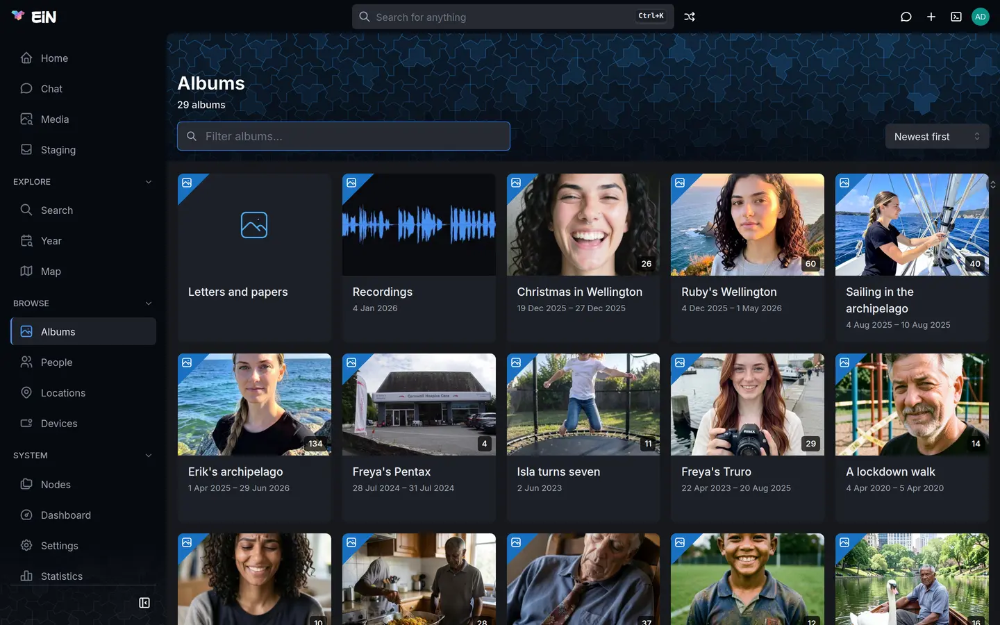
Albums across the decades
Every album is a cover with its dates and how much it holds. Sort by date, name or size, filter by title, or jump across decades on the time rail. One picture can sit in several albums without being copied.
An album, day by day
Pictures in a justified grid, a section for each day. Bursts taken seconds apart stack behind one photo. The Map tab shows where they were taken beside the GPS tracks of those days.
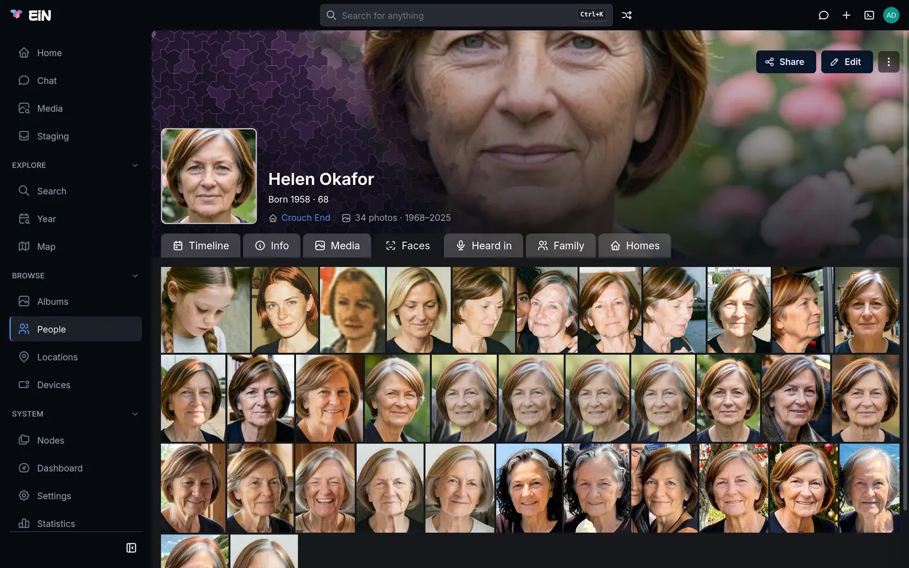
Faces become people
The same face across thousands of photos becomes one person, ready to be named. Name a group once and every face in it follows. Here is Helen, in pictures from 1968 to 2025.
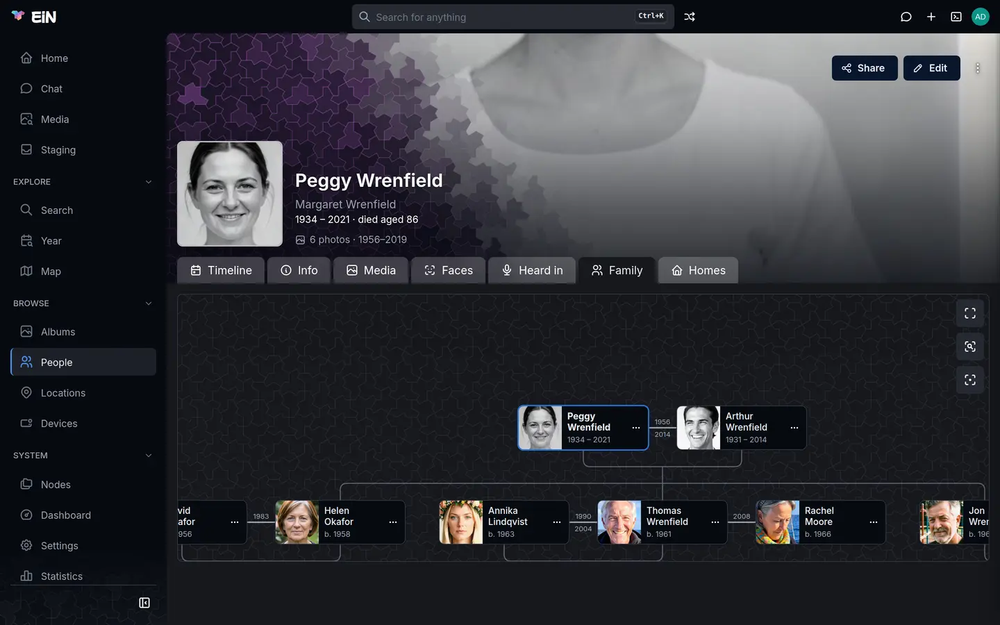
A family tree that grows where you open it
Ancestors above, descendants below, couples side by side. Adoptive parents and dated partnerships are supported, and a wedding's date lands on both people's timelines.
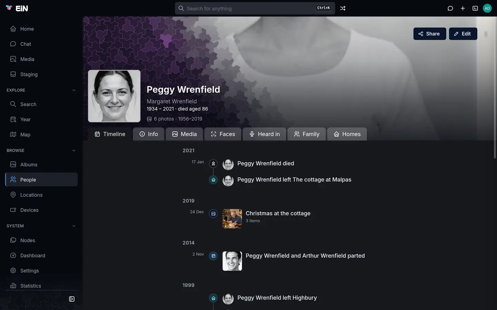
A page for every person
A timeline of births, weddings, moves and albums, the recordings they are heard in, the homes they lived in and their family. Peggy's runs from her birth in 1934, through her 1956 wedding, to her death in 2021.
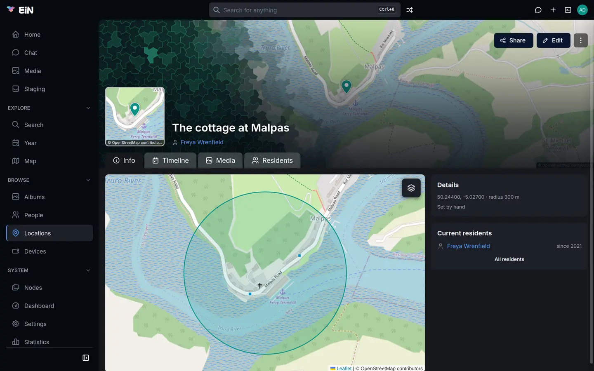
Places that know who lived there
Draw a place as a point, a circle or an outline, and the photos whose GPS falls inside it are linked to it. Each place keeps a timeline of who lived there and what was taken there.
A map of everything, with GPS tracks
Every geotagged picture, every place and every GPX track on one map. Narrow it to a span of years, a person, a place or a label. Here: a corner of the Stockholm archipelago, with a year of one phone's photos and the tracks it recorded, three sailing days among them.

A year at a time
The albums with pictures from one year, and the people born or died in it, under a bar for every year, so you can see at a glance where a family's pictures gather and where they thin out.
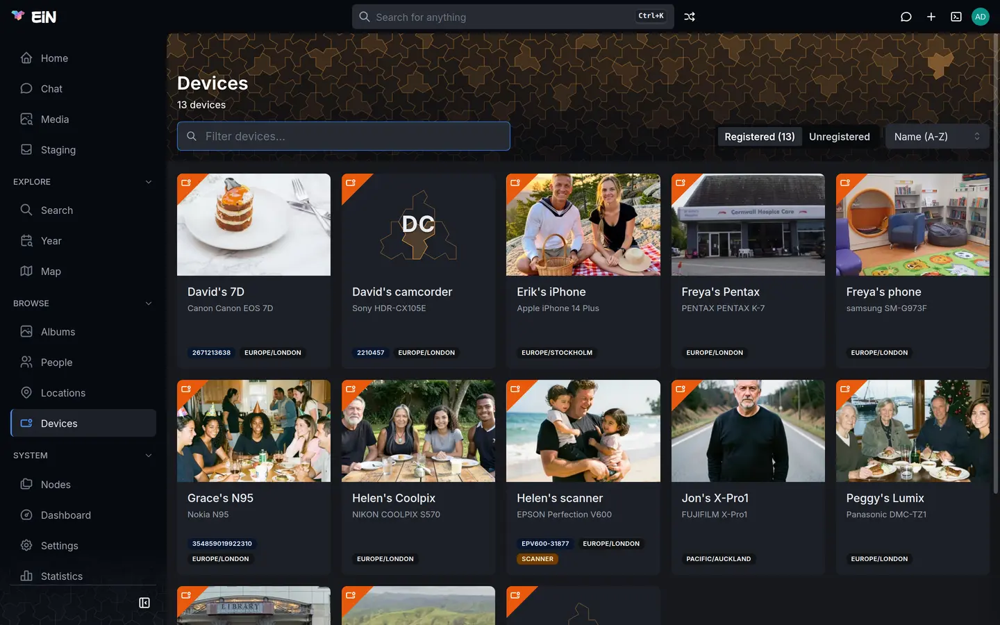
The camera behind every photo
Files are matched to the cameras, phones, camcorders and scanners you have registered, by serial number or by make and model, and EiN suggests the ones it has seen. A device page shows what it took, who owned it when, its time zone and its GPS track.
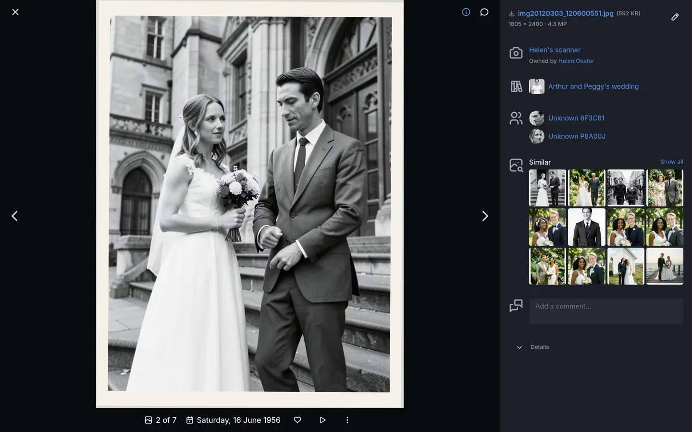
Old prints stay in their decade
Put a box of scans in a scans category, or register the scanner, and the prints are not dated to the day they went through it; they wait for a date someone knows. This one was scanned in 2012. The archive says 16 June 1956.
Every kind of file a family keeps
Drop in a phone's camera roll, a box of scans or a Google Takeout. Each file is recognised by its bytes, not its name, and gets what its kind needs: a picture to show in the browser, a copy that plays, its text and its date.
- Photos
- JPEG, PNG, HEIC, AVIF and the other common formats. Every picture is shown from AVIF copies made at the sizes the pages need.
- Camera RAW
- 22 RAW formats, from Canon's CR2 and CR3, Nikon's NEF and Sony's ARW to DNG, Fujifilm's RAF and Olympus's ORF, developed with LibRaw.
- Home videos
- Phone videos and camcorder files, MPEG transport streams included, played from AV1 copies. Their stills are searched like photos, and what is said is transcribed.
- Recordings
- Audio gets a waveform for its picture, a transcript that follows the player, and its speakers told apart and recognised.
- Letters and documents
- PDF, Word, OpenDocument and plain text are read and searchable, and so is the text in pictures: signs, prints and handwriting.
- Sidecars and tracks
- Google Takeout's JSON and XMP sidecars give their dates and places to the files they describe, and GPX tracks join the devices that recorded them.
What the Archive works out by itself
Every file goes through a series of small steps, each a pipeline of its own, and the pages fill in as they run: media-ingest reads the file's metadata,
media-faces finds the faces, media-transcribe listens, media-ocr reads, media-geocode finds the street and
media-fingerprint finds the copies. The analysis goes to the media service on your own machine.
When
- Each file is dated from its most trustworthy clock: a date someone typed, a sidecar file, GPS, the camera or the file name. EiN shows which one it used.
- Time zones come from GPS or the device's own history, so a trip's photos sort into the right moment.
- Vague dates stay vague: a print can be just "1975".
Where
- Photos with GPS go on the map, with their street address.
- A photo taken inside a place you have drawn is linked to it.
- A GPX file joins the device it names, and its track shows on the albums' maps.
Who
- Faces are found and grouped into people. Name a group once.
- A photo shows how old each person in it was that day.
- Recordings are split by speaker, and voices are recognised across recordings, as faces are.
What
- Search for "birthday cake with candles" and find every one, with nothing tagged.
- Text in pictures is read and searchable, handwriting in English, Swedish and Finnish included. Press t to lay it over the picture.
- Speech is transcribed, and the player follows along in the transcript.
Copies
- Exact copies, and the same picture saved smaller, re-encoded or cropped, are found and lined up.
- Bursts taken seconds apart are stacked behind one photo.
- A new file you already have is shown beside the original, so you keep the best one.
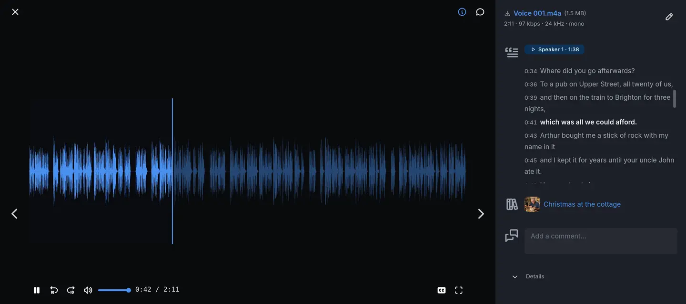
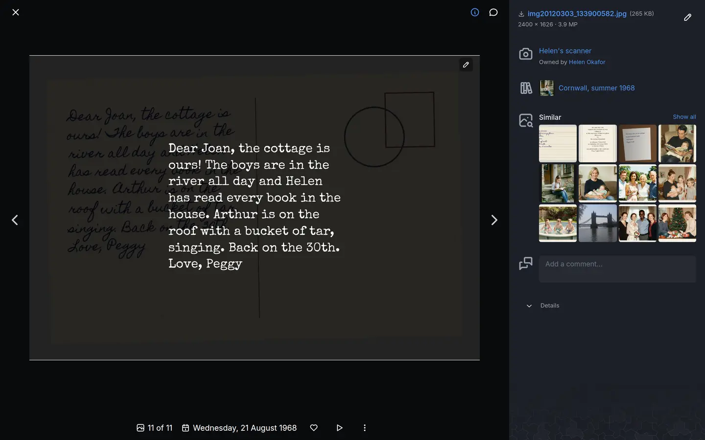
One search box for pictures, speech and letters
Type "Christmas tree" and get the family's Christmases, from a black-and-white print of 1962 to phone photos of 2019, and the moments in home videos that show one, with nothing tagged. The same box finds a word on a sign, in a handwritten letter or in something said on a home video, and a hit in a recording opens it at the minute the word is said.
Write a sentence, such as "videos of Helen and David from 1998": the people and years become filters you can remove, and the kind of file sets the type.
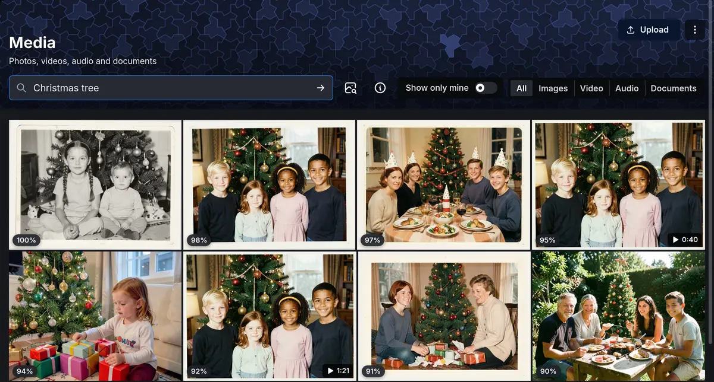
Ask about the family
Beside the Archive, the Assistant is at its most useful. It gets the Archive's commands as tools: search, the people and how they are related, the timelines of people, places and devices, and what a picture shows. It knows which picture you have open, and it can draw a family tree or a map under its answer.
- A plain request for pictures, such as "show photos of Helen from 1998", is answered straight from the search when the search is sure what it asks for, in a fraction of the time.
- It can set someone's parent or partner, add an event to a life or write a picture's description, each shown as a command that runs only when you press Run.
- The model runs on your own machine by default. With a hosted provider, the chat tells everyone that their questions, and what it reads in the archive, leave the server.
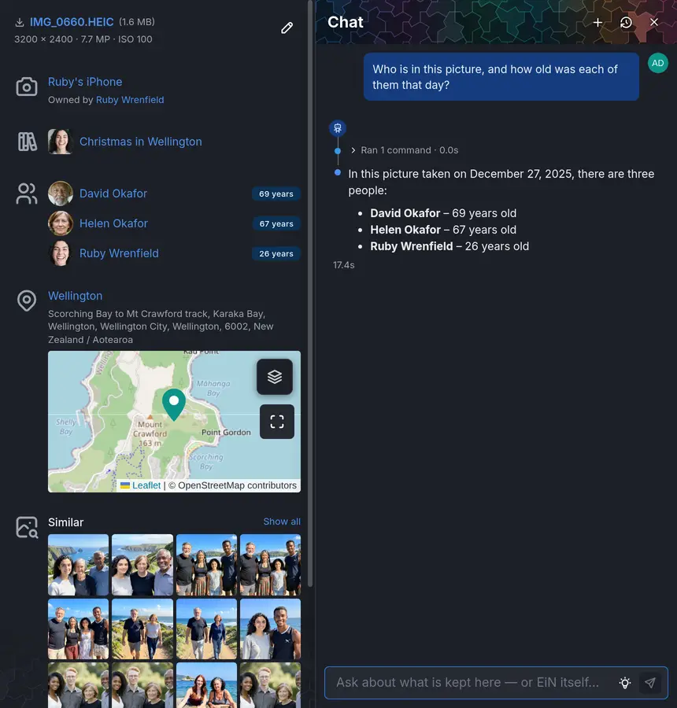
The archive in the shell
Every photo, person and album is a path in the tree, so the shell reaches all of them. The Archive's 130 commands sit beside the core's, from person to
person-merge, and the terminal shows pictures inline.
Copy a box of scans in
Uploads, SFTP copies and zips land in your own staging area first, outside the shared library.
$ ssh -p 2222 helen@ein.example
helen@:~$ find /archive/people -maxdepth 1 -type person | wc -l
19
$ scp -P 2222 -r scans/ \
helen@ein.example:/home/helen/staging/files/inbox/- EiN recognises a Google Takeout, a scanner's output or a phone's camera folder.
- It groups an import into events and trips, and proposes the album each group belongs in. Nothing is filed without you.
The media service does the looking
The Archive's pipelines hand every picture, video and recording to EMS, the media service: every media tool and model EiN uses, in one container behind one HTTP API, reached through a small module of its own. No photo, face or voice leaves your machine to be analysed.
With an NVIDIA card, each model family runs on it when it fits and on the CPU when it does not; without one, everything runs on the CPU. The models stand on the open tools below, all inside the same container.
| Faces | InsightFace buffalo_l Non-commercial research |
|---|---|
| Speech | faster-whisper large-v3 MITSilero VAD MIT |
| Who speaks when | NVIDIA Sortformer CC BY-NC 4.0NVIDIA TitaNet CC BY 4.0 |
| The talking face | LR-ASD MIT |
| Picture search | SigLIP2 So400m Apache-2.0 |
| Text search | jina-embeddings-v5-text-small CC BY-NC 4.0 |
| Printed text | PP-OCRv6 Apache-2.0 |
| Handwriting | Multicentury PP-OCRv6, National Archives of Finland Apache-2.0Multicentury TrOCR, National Archives of Finland Apache-2.0, built on Microsoft's TrOCRMicrosoft TrOCR large handwritten None stated; trained on IAM, research only |
| Copies | Meta SSCD MITChromaprint LGPL-2.1 |
The tools it runs, and their licences
- FFmpeg GPL-3.0, as builtVideo and audio: reading streams, AV1 copies on the graphics card's encoder or the CPU, stills and waveforms
- ImageMagick ImageMagick LicensePictures: turning, resizing and the AVIF copies every page shows
- libheif LGPL-3.0HEIC and AVIF for ImageMagick, encoding with aom (BSD-2-Clause)
- ExifTool Perl's terms: Artistic or GPLThe metadata in every file: dates, GPS, the camera and its serial number
- LibRaw LGPL-2.1 or CDDL-1.0Camera RAW files, through rawpy (MIT)
- Chromaprint LGPL-2.1Fingerprints of sound, to find the same recording twice
- Pillow MIT-CMUPictures for the models, HEIC included through pillow-heif (GPL-2.0 wheels)
- OpenCV Apache-2.0Pictures and video frames for the face and talking-face models
- RapidOCR Apache-2.0Runs the PP-OCR models that find and read printed text
- PyMuPDF AGPL-3.0Text and pages of PDF files
- python-docx MITText of Word files
- odfpy GPL-2.0 or Apache-2.0Text of OpenDocument files
- Lingua Apache-2.0Which language a text is written in
- PyTorch BSD-3-ClauseRuns most of the models, on CUDA or the CPU
- ONNX Runtime MITRuns the face models
- CTranslate2 MITRuns Whisper, through faster-whisper (MIT)
- NVIDIA NeMo Apache-2.0Runs the speaker models
- Hugging Face Transformers Apache-2.0Loads the search and handwriting models, with Sentence Transformers (Apache-2.0)
- FastAPI MITThe HTTP API EiN talks to, served by uvicorn (BSD-3-Clause)
Shared on your terms
Every node has an owner and permissions, and the same check applies in the browser, the shell, SSH and SFTP. By default the accounts on your server see each other's albums, and nobody without an account sees anything. What someone may not open is not listed anywhere: not in folders, search, the map or the home page.
- Sharing in plain words
- The Share dialog lists who can view and who can edit. A few photos can stay private inside a shared album.
- A link for one album
- Open one album to someone without an account, for a day, a month, a year or for good, and revoke it when you like.
- Visitors only if you say so
- Turn on "Visitors may browse" and people who are not signed in see what you shared with visitors, and nothing else. They can never change anything.
- Undo, and a record
- What you delete on an album, photo or person page waits 30 days in a trash that can restore it. Changes to the archive, accounts and settings are kept in an audit trail.
- Analysis stays at home
- No photo, face or voice leaves the machine to be analysed. GPS positions and place names go to OpenStreetMap's address service, which you can swap for your own, and the browser loads map tiles from OpenStreetMap and Esri.
At home on a phone
Below tablet width EiN switches to a phone layout: swipe to open the menu, pinch to show two to five pictures a row, swipe up in the viewer for everything about a picture. Served over HTTPS, it can be added to the home screen and opens full screen, like an app.
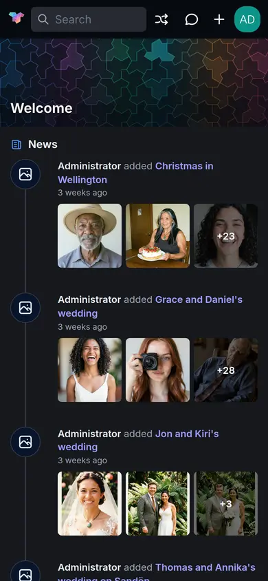
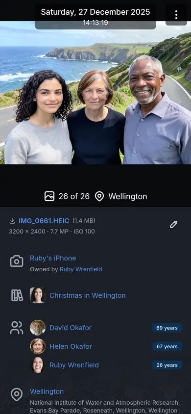
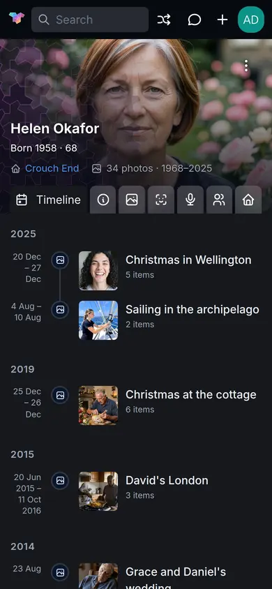
Screenshots
Almost every page
From the demo archive of the invented Wrenfield family. Open one to see it large; the arrow keys step through them.
The coreThe pages every installation has, whatever modules it runs.
-
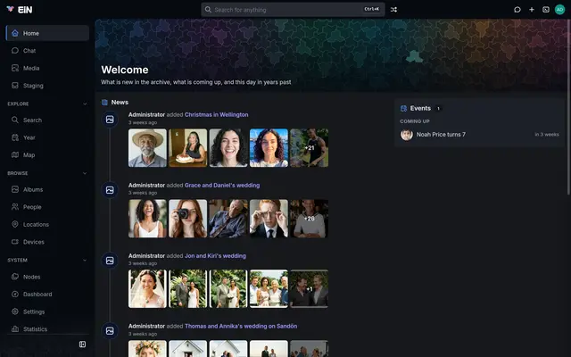
Home
What is new, what is coming up and this day in years past. The core lays the page out; modules fill it, here with the Archive's albums and a birthday.
-
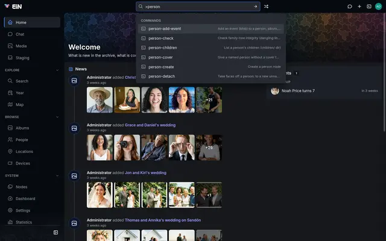
The finder
Ctrl+K searches everything from any page. Start with > and it searches the commands instead, each with what it does.
-
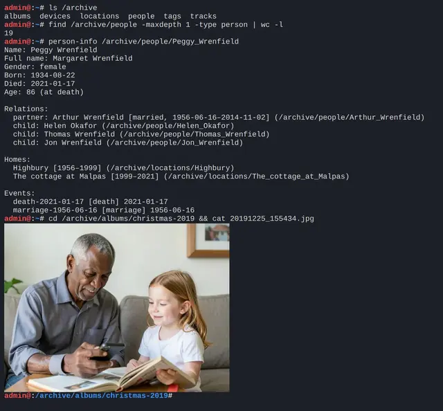
The terminal
Alt+T opens a bash shell beside any page, as you, with your permissions. It shows pictures inline.
-
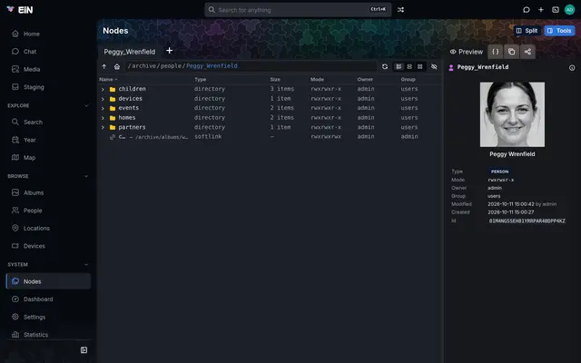
Nodes
The tree itself: any folder, each node with its type, size, mode, owner and group, and a preview of the one selected.
-
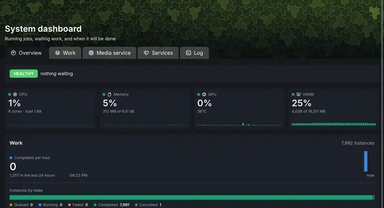
System dashboard
One word on whether it is keeping up, with the machine's load and how long the disks will last.
-
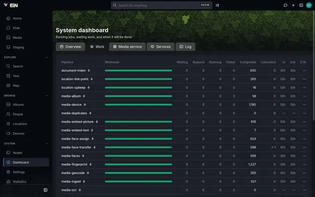
Work
Every pipeline, with what waits, runs, failed and is done, and how fast.
-
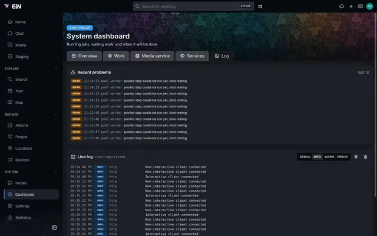
Log
Recent problems, and the system log as it is written.
-
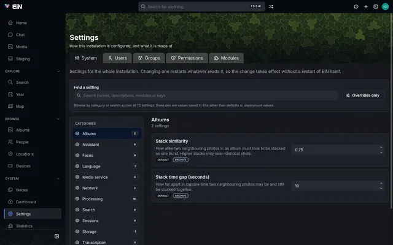
Settings
Every setting by category, the core's and each module's, with its default and what it does.
-
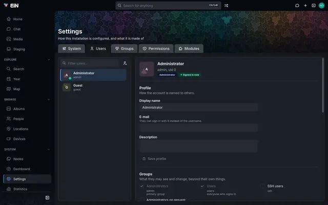
Users
Accounts, their profiles and the groups they are in.
-
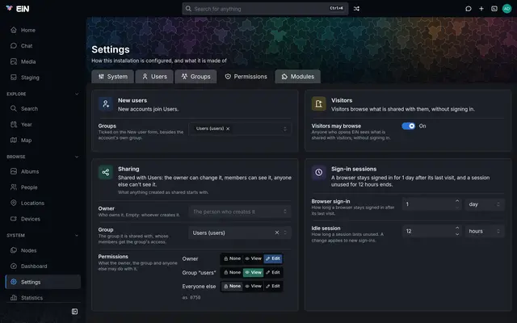
Permissions
What a new user joins, who sees what is shared, whether visitors may browse, and how long a sign-in lasts.
-
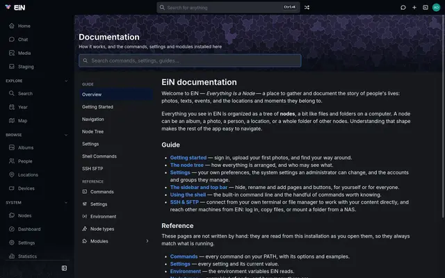
Documentation
A guide, and reference pages read from the installation as it is: every command, setting, variable and node type.
-
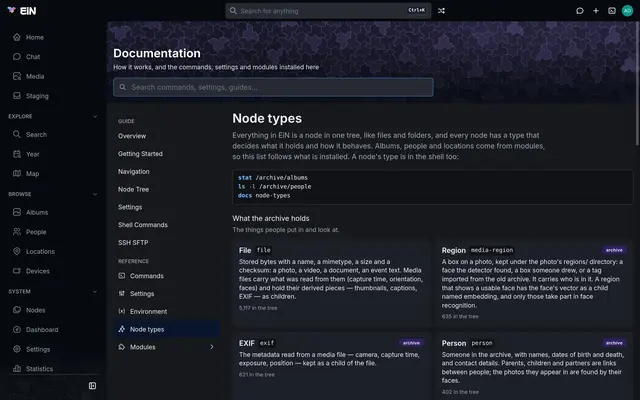
Node types
Every node type, which module adds it and how many there are.
-
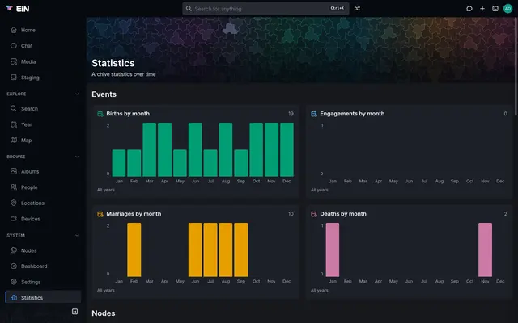
Statistics
Charts over what is kept. Modules add their own, here the Archive's births, weddings and deaths by month.


The AssistantA chat that answers by running EiN's commands as you.
-
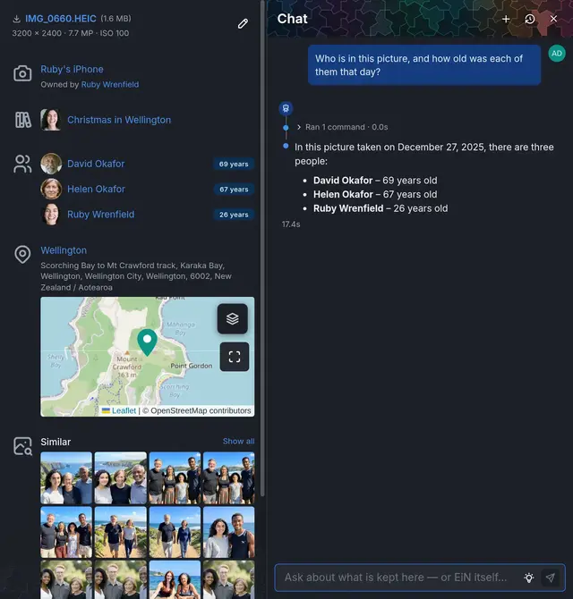
The chat drawer
Beside any page, knowing which picture is open.
-
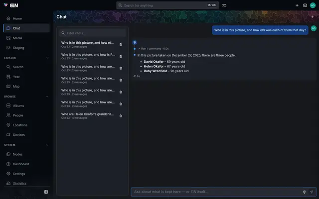
Chats
Earlier conversations, and each answer with the commands it ran.


The ArchiveA family's photos, videos, recordings and letters.
-
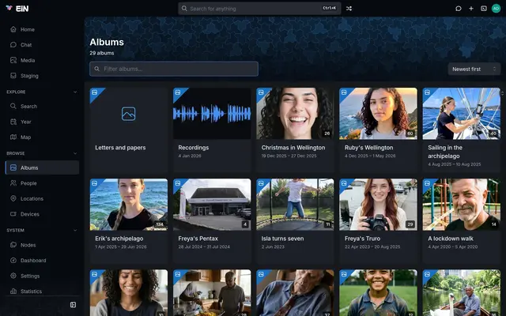
Albums
Every album as a cover with its dates and size, across the decades.
-
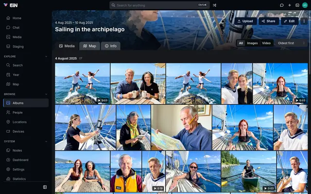
An album
Pictures day by day, bursts stacked behind one photo.
-
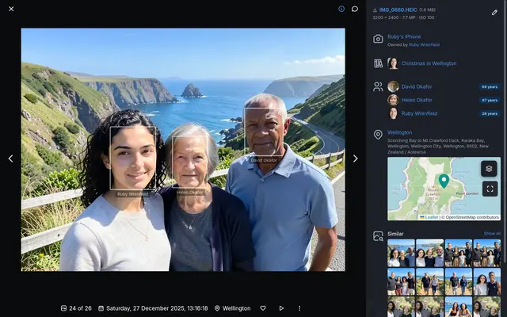
The viewer
A picture with the phone that took it, the album, who is in it and their ages, and where.
-
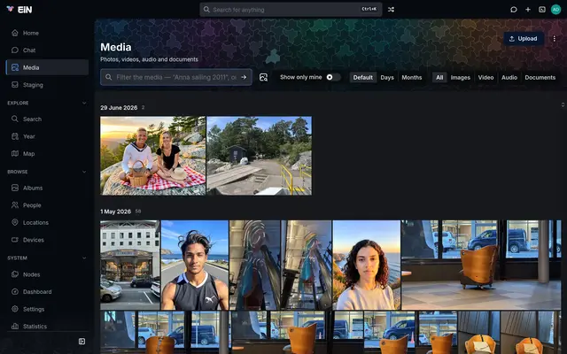
Media
Every photo, video, recording and document, by day or month, or by kind.
-
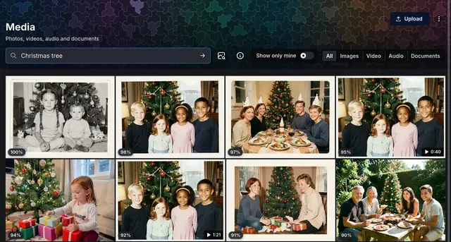
Search
Search by what is in a picture, with nothing tagged; video moments included.
-
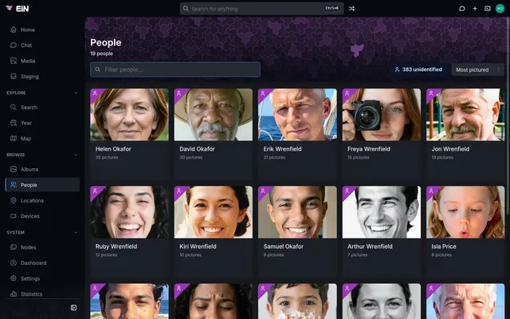
People
Everyone in the archive, with how many pictures each is in.
-
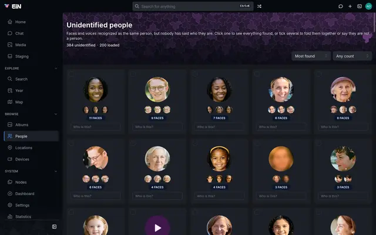
Unidentified people
Faces and voices found to be one person, waiting for a name.
-
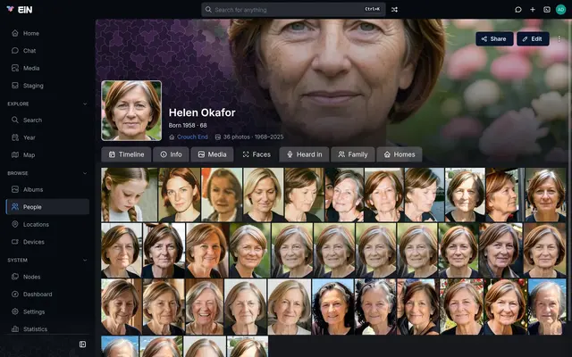
Faces
Every face of one person, from childhood on.
-
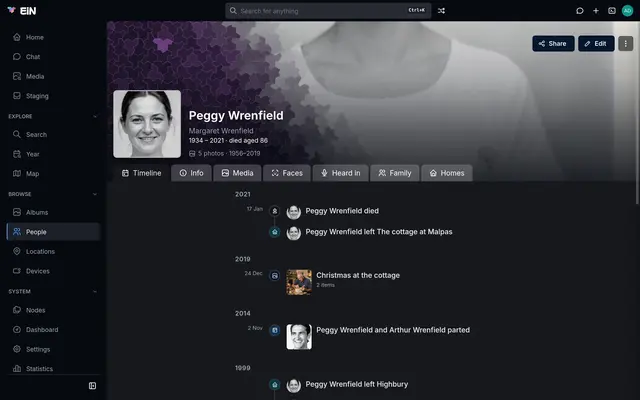
A life
A timeline of births, weddings, moves and albums.
-
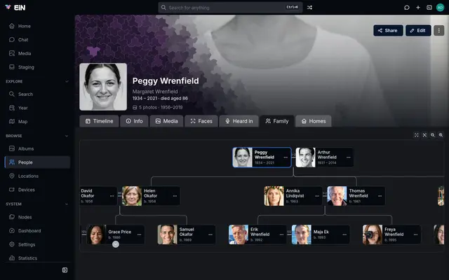
Family tree
Ancestors above, descendants below, couples side by side.
-
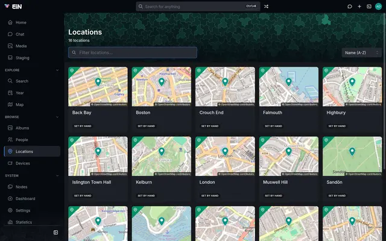
Locations
Every place, as a point, a circle or an outline on its map.
-
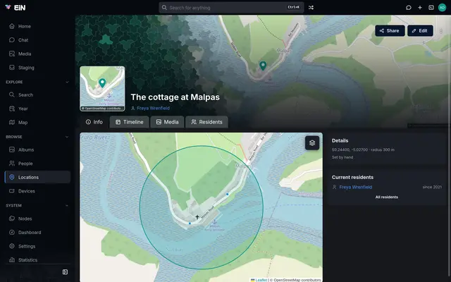
A place
Who lived there and what was taken there.
-
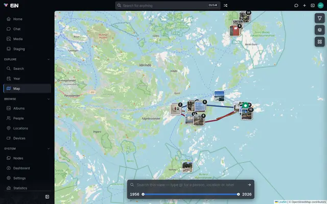
Map
Every geotagged picture, place and GPS track on one map.
-
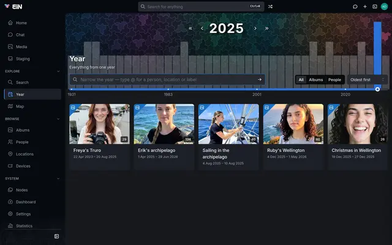
Year
The albums of one year, under a bar for every year.
-
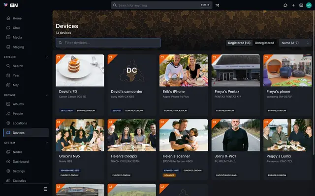
Devices
Cameras, phones, camcorders and scanners, with owners and time zones.
-
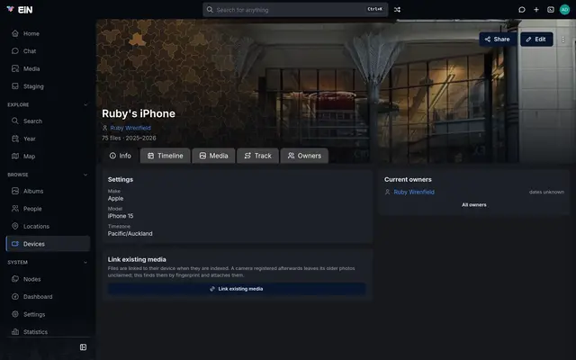
A device
One phone: its owner, time zone, timeline, media and GPS track.
-
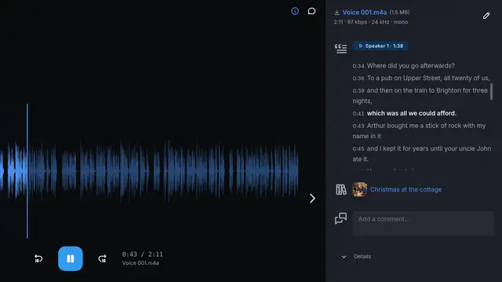
A recording
A transcript that follows the player, line by line.
-
An old print
A scan dated to its day in 1956, not the day it was scanned.
-
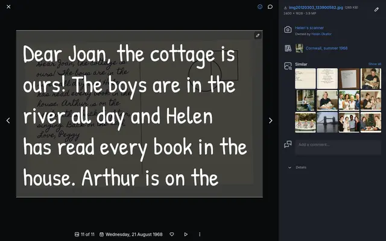
Handwriting
The words read from a postcard laid over it.
-
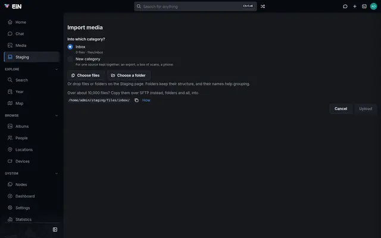
Import
New files go to your own staging area first; big imports go over SFTP.


System requirements
EiN runs in containers on one Linux machine. A graphics card is optional: without one everything works, only slower. The minimum is an estimate.
| Part | Minimum | Recommended |
|---|---|---|
| System | Linux on x86-64, with rootless podman or Docker, and compose | |
| Processor | 4 cores | 6 cores or more |
| Memory | 16 GB, with the assistant off or on a hosted model, and smaller memory caps | 32 GB |
| Graphics card | None. Transcribing takes about twice the length of the audio. | NVIDIA with 16 GB, room for the media models and the assistant side by side. 8 and 12 GB cards work, with less room for the assistant. |
| Storage | About 100 GB free on an SSD for the images and the database with the media service, 10 GB without, plus your files | The database on an SSD, your originals on a large disk or a NAS |
| Browser | A current browser that shows AVIF and plays AV1 video: Chrome, Edge or Firefox, or Safari 17 and newer on an Apple device that decodes AV1 (M3, A17 Pro or later). Other Apple devices show a video's poster but cannot play it. | |
What runs
- EiN
- The web interface, the shell, SSH and SFTP, sharing, and the pipelines that process every file. Deno, no graphics card, about 0.7 GB in use under load.
- PostgreSQL 18
- Every node, link, permission, vector, track and log, with TimescaleDB, pgvector and PostGIS. About 150 KB per original file.
- Media service Option
- Every model and media tool, which the Archive needs. An image of about 30 GB with the models built in, so nothing is downloaded at run time. Runs on an NVIDIA card or the CPU.
- Language model Option
- Qwen3.5-4B in llama.cpp for the assistant, 5.6 GB on the card or in memory. Or a hosted provider, or none.
- Ports: 8080 for the web, 2222 for SSH and SFTP. Put an HTTPS proxy in front of EiN, and keep the database and media service behind a firewall.
- Three of the default models, for faces, text search and speaker turns, are licensed by their makers for non-commercial use only, and the English handwriting model, which the Finnish one builds on, was trained on research-only data. That is fine for a family at home; using EiN commercially means replacing or licensing them.
- Graphics cards must be NVIDIA, with driver 610 or newer. There is no AMD, Intel or Apple path yet.
Open source
EiN and the libraries it is built on, on GitHub under einhq. The three libraries are on JSR too.
- coreEiN itself: the node tree, the shell, the pipelines, the web interface, SSH and SFTP. TypeScript on Deno. MIT.
- module-archiveThe Archive: people and their family tree, photos and videos, places, staging. MIT.
- module-assistantThe chat that answers questions about the archive. MIT.
- module-emsEiN's client for the media service. MIT.
- emsThe media service: every media tool and model behind one HTTP API. Python.
- deployEiN on one machine with podman compose or docker compose: what the installer fetches and runs. MIT.
- dbThe PostgreSQL 18 image and its run script.
- llmThe assistant's local language model: llama.cpp's server and its run script.
- bash-parserParses bash 5.2 syntax into a syntax tree.
@ein/bash-parseron JSR. MIT. - bash-executorRuns it: expansions, control flow, builtins, line editing and completion.
@ein/bash-executoron JSR. MIT. - ssh2An SSH client and server in TypeScript, with no native bindings.
@ein/ssh2-tson JSR. MIT.